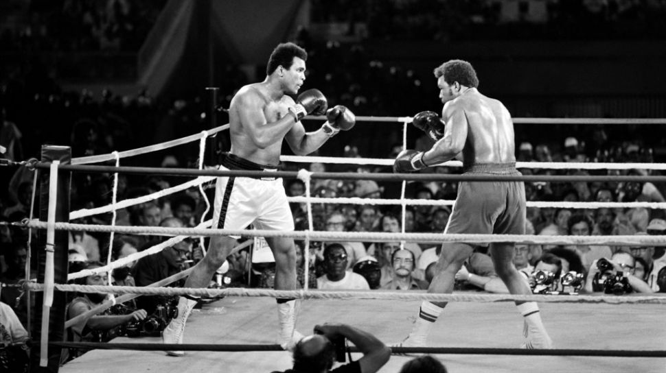
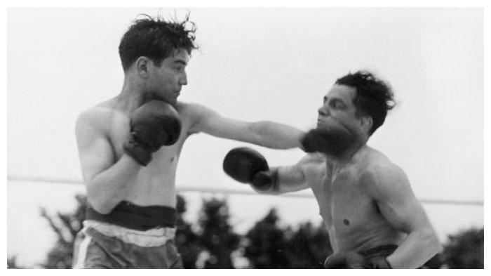

Sample Headline
SEJARAH TINJU
Tinju Di indonesia

Sejarah tinju di Indonesia dimulai pada masa penjajahan Belanda, ketika tentara-tentara Belanda memperkenalkan olahraga tinju kepada masyarakat Indonesia. Pada awalnya, tinju hanya dimainkan oleh masyarakat kelas atas dan menjadi hiburan bagi orang-orang Belanda yang tinggal di Indonesia.
Pada tahun 1962, Indonesia berhasil meraih medali perak di ajang Asian Games yang diselenggarakan di Jakarta. Keberhasilan ini membawa nama Indonesia sebagai salah satu negara yang mampu bersaing di dunia tinju.
Selama beberapa dekade berikutnya, olahraga tinju terus berkembang di Indonesia dan menghasilkan beberapa petinju terkenal seperti Ellyas Pical, Nico Thomas, dan Chris John. Pada tahun 1995, Chris John berhasil memenangkan medali perak di Kejuaraan Tinju Amatir Dunia dan kemudian menjadi juara dunia tinju profesional di kelas bulu selama bertahun-tahun.
Tinju Di Dunia

Olahraga tinju telah ada selama ribuan tahun. Menurut sejarah, tinju pertama kali muncul di Mesir Kuno pada sekitar tahun 3000 SM. Pada saat itu, tinju dilakukan dengan menggunakan tangan kosong dan tidak ada aturan yang mengatur olahraga ini
Namun, olahraga tinju modern dimulai pada abad ke-18 di Inggris. Pada saat itu, tinju menjadi semakin populer dan sering diselenggarakan di arena-arena besar. Pada tahun 1867, aturan tinju modern pertama kali diperkenalkan oleh Marquess of Queensberry, yaitu aturan yang masih digunakan hingga saat ini, seperti jumlah ronde, durasi ronde, ukuran ring, dan jenis sarung tinju yang digunakan.
Pada awalnya, olahraga tinju hanya dimainkan oleh pria, tetapi pada akhir abad ke-19, tinju wanita mulai muncul dan semakin populer. Pada tahun 1904, tinju menjadi olahraga resmi di Olimpiade, meskipun hanya dibatasi untuk pria.